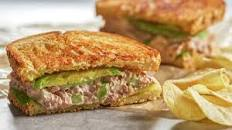

Tuna Sandwich

Description
You can never go wrong with a good, healthy tuna sandwich.
Easy and quick to make, it's the perfect lunch sandwich.
Ingredients
- 1 can of tuna in water, drained
- 1/2 chopped onion
- 1 chopped celery stick
- 1/2 cup of mayonnaise
- 4 Slices of your favourite bread
- 1 avocado, sliced
- 2 teaspoons of salt/ seasoning of your choice
Steps
- In a bowl, mix the tuna, celery, onion and mayonnaise.
- Spread the tuna mixture on top of 2 slices of bread.
- Place the avocado slices on top of the tuna mixture.
- Add salt/seasoning on top of the avocado slices.
- Place the two other slices on top to complete the sandwiches.
- Toast the sandwiches(Optional).